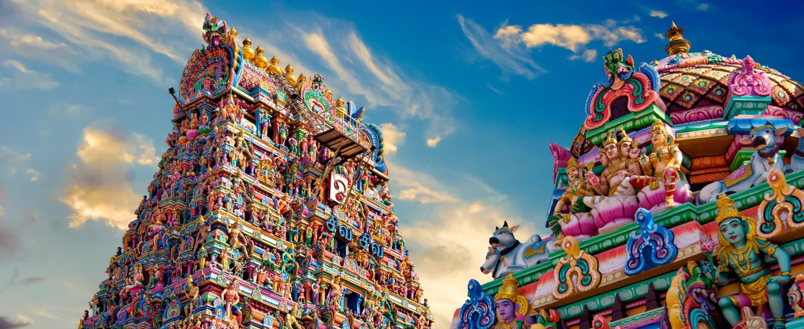

trip to Manali, nestled in Himachal Pradesh, offers a
delightful mix of adventure, natural beauty, and cultural experiences. The best time to visit is either
summer (March to June) for pleasant weather or winter (October to February) for snow activities. Accessible
by air via Bhuntar Airport, by train to Chandigarh or Ambala, and by road from Delhi or Chandigarh, Manali is
well-connected. Accommodation ranges from budget hostels to luxury resorts. Must-see attractions include Hadimba Temple,
Solang Valley, Rohtang Pass, Manu Temple, and Vashisht Hot Water Springs.
trip to Manali, nestled in Himachal Pradesh, offers a
delightful mix of adventure, natural beauty, and cultural experiences. The best time to visit is either
summer (March to June) for pleasant weather or winter (October to February) for snow activities. Accessible
by air via Bhuntar Airport, by train to Chandigarh or Ambala, and by road from Delhi or Chandigarh, Manali is
well-connected. Accommodation ranges from budget hostels to luxury resorts. Must-see attractions include Hadimba Temple,
Solang Valley, Rohtang Pass, Manu Temple, and Vashisht Hot Water Springs.
Price 19999
 A trip to Kashmir, known as "Paradise on Earth," offers an enchanting experience with its stunning landscapes, including the serene Dal Lake and Mughal Gardens in Srinagar,
the skiing slopes of Gulmarg, the tranquil beauty of Pahalgam, and the picturesque Sonamarg. Best visited in spring and autumn, Kashmir also provides winter sports in its snowy season. Rich in culture, it features traditional music, dance, and a delectable cuisine with dishes like Rogan Josh and the Wazwan feast.
and more thingd to vist in kashmir click for more offers
A trip to Kashmir, known as "Paradise on Earth," offers an enchanting experience with its stunning landscapes, including the serene Dal Lake and Mughal Gardens in Srinagar,
the skiing slopes of Gulmarg, the tranquil beauty of Pahalgam, and the picturesque Sonamarg. Best visited in spring and autumn, Kashmir also provides winter sports in its snowy season. Rich in culture, it features traditional music, dance, and a delectable cuisine with dishes like Rogan Josh and the Wazwan feast.
and more thingd to vist in kashmir click for more offersPrice 13999

A trip to Chennai, the cultural capital of South India,
offers a blend of historical, cultural, and coastal experiences.
Known for its pristine Marina Beach, the bustling Mylapore neighborhood with
the ancient Kapaleeshwarar Temple, and the majestic Fort St. George, Chennai is a
vibrant city best visited between November and February to avoid the intense summer heat. The city is also famous for its rich culinary heritage, featuring dishes like dosa, idli, and Chettinad chicken. Well-connected by air, rail, and road, Chennai offers various activities, from exploring its classical music and dance scene.
Price 15999
 A trip to Hyderabad, known as the "City of Pearls," offers a delightful mix of historical grandeur, cultural richness, and modern attractions. Renowned for its iconic Charminar, the grand Golconda Fort, and the opulent Chowmahalla Palace, Hyderabad beautifully preserves its royal heritage. The city is also famous for its delectable Hyderabadi biryani and other rich Mughlai cuisine. Best visited between October and March to enjoy pleasant weather, Hyderabad is well-connected by air, rail, and road.and vist near all paces in hyderabad with low cost.
A trip to Hyderabad, known as the "City of Pearls," offers a delightful mix of historical grandeur, cultural richness, and modern attractions. Renowned for its iconic Charminar, the grand Golconda Fort, and the opulent Chowmahalla Palace, Hyderabad beautifully preserves its royal heritage. The city is also famous for its delectable Hyderabadi biryani and other rich Mughlai cuisine. Best visited between October and March to enjoy pleasant weather, Hyderabad is well-connected by air, rail, and road.and vist near all paces in hyderabad with low cost.